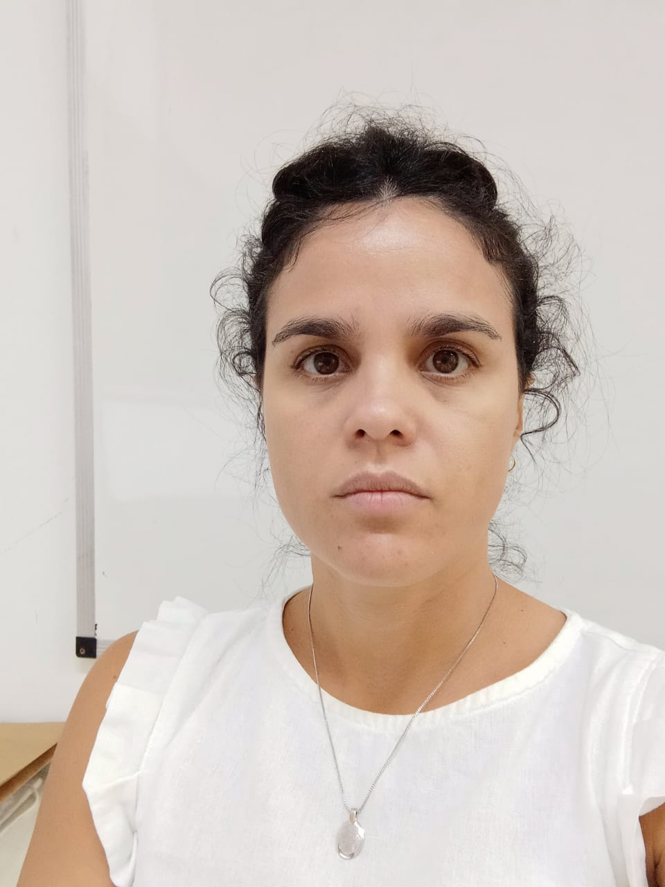

Coordenador & Investigador Principal
Professor do Departamento de Estatística, Universidade Federal da Bahia; Presidente da International Society for Business and Industrial Statistics; Presidente Eleito da International Association for Statistical Computing; Vice-Coordenador da Especialização em Ciência de Dados e Big Data; Membro do Conselho Diretor da Associação Brasileira de Estatística; Coeditor de periódicos como: Computational Statistics, Statistics, Optimization & Information Computing, Biometrical Letters, Brazilian Journal of Biometrics.


Coordenador de Pesquisa e Líder de Equipe
Estatístico, mestrando em Matemática na Universidade Federal da Bahia, Brasil. Seus interesses de pesquisa incluem inteligência de negócios, aprendizado estatístico e análise de esportes.

Coordenador de Pesquisa e Líder de Equipe
Professor na Universidade Federal da Bahia, Brasil. Seus interesses de pesquisa incluem modelagem matemática e computacional, inteligência artificial, aprendizado de máquina e mineração de texto.

Coordenador de Pesquisa e Líder de Equipe
Estatístico. Tech Lead Data Scientist na PRODEB. Apaixonado por aprender. Principais tópicos de pesquisa incluem: Análise Esportiva, Análise de Séries Temporais, e Algoritmos de Aprendizado Não Supervisionado.

Coordenador de Pesquisa e Líder de Equipe
Doutorando em Estatística na UFPE. Seus interesses de pesquisa incluem Aprendizado Estatístico, Métodos Computacionais e Visualização de Dados.

Coordenador de Pesquisa e Líder de Equipe
Professor e Pesquisador na Universidad Peruana Unión, Peru. Seus principais interesses de pesquisa incluem reconhecimento de padrões em Aprendizado de Máquina, técnicas de Aprendizado Profundo e Séries Temporais com SSA.


Coordenador de Pesquisa e Líder de Equipe
Mestre em Matemática pela Universidade Federal da Bahia e Geofísico na Petrobras, Brasil. Seus principais interesses de pesquisa são geociências, aprendizado de máquina, aprendizado profundo e redes neurais.

Coordenador de Pesquisa e Líder de Equipe
Professor de Estatística e cientista de dados especializado em ML, econometria e séries temporais. VP de Engajamento Estatístico Global na LISA 2020, fundador da ADA Global Academy e VP da IASE (2023-2025). Sua visão é promover a educação estatística e computação globalmente.

Coordenador de Pesquisa e Líder de Equipe
Professor no Departamento de Estatística da UFBA. Interesses de pesquisa estão na área de estatística e ciência de dados em uma perspectiva Bayesiana, com expertise em modelos espaço-temporais e análise de variáveis latentes.

Coordenador de Pesquisa e Líder de Equipe
Professora no Departamento de Matemática da Universidade Nova de Lisboa, Portugal. Seus principais interesses de pesquisa são genética estatística, estatística robusta e estudos de associação genética.

Colaborador e Membro Afiliado
Doutor em Engenharia Ambiental pela Universidade Federal do Espírito Santo, Brasil. Seus interesses de pesquisa incluem análise e previsão de séries temporais, bootstrap, estatística robusta e imputação de dados no contexto de dados dependentes do tempo.

Colaborador e Membro Afiliado
Professor no Centro Universitário Senai Cimatec, Salvador, Brasil. Seus interesses de pesquisa estão em sistemas complexos nos seguintes tópicos: análise de séries temporais, matemática computacional e sinais eletrofisiológicos.

Collaborator & Affiliate Member
Doutorando em Estatística na Universidade de Peshawar, Paquistão. Possui Mestrado e M.Phil. em Estatística e é especialista de área no Departamento de Educação de Peshawar. Jovem orientador na Universidad Peruana Unión, Peru. Tem interesse em séries temporais, regressão e estatística aplicada.

Colaborador e Membro Afiliado
Bacharel em Estatística pela Universidade Federal da Bahia, Mestre em Estatística pela Universidade Federal de Pernambuco e Doutor em Ciências pela Universidade de São Paulo (ESAQLQ/USP). Professor no Departamento de Ciências Exatas da Universidade Estadual de Feira de Santana (UEFS).

Colaborador e Membro Afiliado
Professora no Departamento de Matemática da UFBA, com doutorado em Matemática pelo IMPA. Atua nas áreas de otimização e análise convexa, algoritmos numéricos aplicados à ciência de dados, considerando aspectos teóricos e computacionais. É membro do grupo Mulheres na Otimização.

Colaborador e Membro Afiliado
Professor assistente do Departamento de Estatística, Universidade de Guilan, Irã. Seus interesses de pesquisa incluem análise de dados ultradimensionais, aprendizado de máquina, seleção de variáveis, mineração de dados, análise de espectro singular e estatística robusta.

Colaborador e Membro Afiliado
Professor Associado de Estatística, Departamento de Economia e Estatística, Universidade de Maurício. Interesses de pesquisa incluem modelagem de séries temporais com valores inteiros, modelagem espacial, computação estatística, teoria de distribuição, análise de dados longitudinais e análise multivariada.

Colaborador e Membro Afiliado
Professor Associado de Estatística na Universidade Bu-Ali Sina, Irã. Doutor em Estatística e Mestre em Ciências Atuariais. Seus interesses de pesquisa abrangem tanto estatística como ciências atuariais.

Colaborador e Membro Afiliado
Professor Visitante na Universidade Federal da Bahia, Brasil. Pesquisador e mentor em várias instituições nacionais e internacionais, incluindo a CentraleSupeléc, França. Seus interesses de pesquisa incluem séries temporais, robustez, bootstrap, modelos espaço-temporais e análise multivariada.

Colaborador e Membro Afiliado
Professora no Departamento de Matemática da Universidade Federal da Bahia. Tem formação em matemática pura com publicações em sistemas dinâmicos e equações diferenciais parciais. Atualmente seus interesses estão na pesquisa aplicada, incluindo modelos de regressão, análise estatística, séries temporais, ciência de dados e aprendizado de máquina.

Colaborador e Membro Afiliado
Professora assistente no Departamento de Estatística da Universitas Sebelas Maret. Interesses de pesquisa são séries temporais para dados de alta frequência com padrões complexos, com foco em análise de espectro singular, séries temporais fuzzy e redes neurais.

Pós-Doutorando
PhD em Estatística, Professor de Finanças e Estatística na Universidade de Tecnologia de Maurício. Membro do Conselho Editorial da Science Journal of Applied Mathematics, SCIREA Journal of Mathematics e Journal of Accounting, Auditing and Taxation.

Pós-Doutoranda
Professora Sênior em Estatística na Universidade de Maurício. Ministrou técnicas de modelagem estatística para estudantes de graduação e pós-graduação. Ela obteve seu doutorado em Estatística na Universidade de Tecnologia MARA, na Malásia, e seus interesses de pesquisa abrangem tanto a biostatística quanto a psicometria.

Estudante de Graduação
Estudante de graduação em Estatística na Universidade Federal da Bahia, Brasil. Interessada em Tratamento e Análise de Dados, Previsão, Visualização e Modelagem de Dados

Estudante de Graduação
Estudante de graduação em Estatística na Universidade Federal da Bahia, Brasil. Interessada em Previsão e Análise de Séries Temporais e Séries Temporais Hierárquicas.

Estudante de Mestrado
DevOps e Arquiteto de Soluções. Diariamente desenvolvendo soluções e otimizações para problemas de dados, banco de dados e infraestrutura no contexto da computação em nuvem.

Estudante de Mestrado
Estudante de mestrado em Ciência de Dados no AIMS, Camarões. Experiência em física fundamental com foco em física energética. Interesses: Análise de Séries Temporais para Previsão, Modelos Híbridos Robustos para Séries Temporais, Aprendizado de Máquina, Ciência de Dados.

Estudante de Graduação
Estudante de graduação em Estatística na Universidade Federal da Bahia. Seus interesses de pesquisa são visualização e modelagem de dados espaciais e temporais, com aplicação a raios.

Estudante de Graduação
Estudante da graduação no bacharelado interdisciplinar em ciência e tecnologia pela Universidade federal da Bahia. Interessado em análise de dados e machine learning.

Estudante de Mestrado
Possui graduação em Estatística pela Universidade Federal da Bahia (2010) e pós-graduação lato sensu em Estatística e Probabilidade pela Universidade Estadual de Campinas (Unicamp), atuando principalmente nos seguintes temas: estimação robusta, regressão linear e detecção de outliers.

Estudante de Graduação
Estudante de Estatística, Cientista de dados na VX Case. Interesses de pesquisa são Inteligência artificial e Séries Temporais.

MSc Student
Mestrando em Ciências Matemáticas (Ciência de Dados) no African Institute for Mathematical Sciences, Camarões. Interessado em Previsão de Séries Temporais, Visão Computacional, Anaálise Estatística, desafios e Machine Learning.

Estudante de Mestrado
Estudante de mestrado em Matemática na Universidade Federal da Bahia, Brasil, e estatístico. Seus interesses de pesquisa incluem estatística computacional, aprendizado estatístico e inferência bayesiana.

Estudante de Graduação
Estudante de graduação em Estatística na Universidade Federal da Bahia. Seus interesses de pesquisa incluem Análise e Previsão de Séries Temporais e Econometria.

Estudante de Graduação
Estudante de Geografia da UFBA. Estudou Serviço Social na UNIFACS (2016 a 2019) e trabalha no Instituto Brasileiro de Geografia e Estatística. Atualmente realiza pesquisa de Ciências de Dados aplicada a Ciência Ambientais.

Mestrando em Ciência de Dados
Estudante de mestrado em Ciência de Dados no Instituto Africano de Ciências Matemáticas (AIMS-Camarões). Seus interesses de pesquisa são Análise de Séries Temporais, Séries Temporais Hierárquicas e Aprendizado de Máquina, com o objetivo de contribuir para o campo da Estatística..

MSc Student
Mestrando em Ciência de Dados no The African Institut of Mathematical Science (AIMS), Camarões. Experiência em eletrônica, engenharia elétrica e análise de dados. Interesses em previsão de séries temporais, inferência estatística, aprendizado profundo e machine learning.

Estudante de Mestrado
Estudante de mestrado em Matemática na Universidade Federal da Bahia, Brasil. Seus interesses de pesquisa incluem análise e previsão de séries temporais, redes neurais recorrentes e mineração de textos.

Mestre em Ciência de Dados
Mestrando em Physics of Life na Technical University of Dresden, Alemanha. Seus interesses de pesquisa incluem séries temporais, aprendizado de máquina, ciência do clima e robótica.

Estudante de Doutorado
Doutoranda em Estatística e Ciência de Dados pela Universidade Federal da Bahia. Professora do Departamento de Matemática e Estatística da Universidade Federal de Rondônia. Interesses em Análise de Séries Temporais, Machine Learning e Deep Learning.

Estudante de Graduação
Bacharela em Ciência e Tecnologia e graduanda em Estatística pela Universidade Federal da Bahia. Interessada em ciência de dados, séries temporais e aplicações de estatística na segurança pública.

Estudante de Graduação
Estudante de bacharelado em Estatística na Universidade Federal da Bahia, Brasil. Interessada em Previsão e Análise de Séries Temporais e Bioestatística.

Estudante de Mestrado
Estatístico. Mestrando em Estatística e Ciência de Dados na UFBA. Atuo com análise de dados, ensino e consultoria. Interesses: Inferência e Machine Learning .

Mestre em Ciência de Dados
Mestrando em Machine Intelligence, AIMS Senegal. Interesses de pesquisa incluem Séries Temporais, Aprendizado Profundo, Segurança Cibernética, Redes de Computadores e Investigação Forense de Documentos.

Estudante de Graduação
Estudante de bacharelado em Estatística na Universidade Federal da Bahia, Brasil. Seus interesses de pesquisa incluem aprendizado supervisionado, classificação e classificação Bayesiana.

Estudante de Graduação
Estudante de Bacharelado Interdisciplinar em Saúde na Universidade Federal da Bahia. Seus interesses de pesquisa incluem séries temporais e ciências de dados para a qualidade de vida.

Mestre em Eletrônica, Eletrotécnica e Automação
Possui um mestrado em Eletrônica, Eletrotécnica e Automação. Atualmente, está cursando um mestrado em Ciência de Dados no AIMS Camarões. Suas principais áreas de interesse são Séries Temporais, Aprendizado Profundo, e Estatísticas Bayesianas.

Mestre em Ciência de Dados
Doutorando na University of Freiburg, Alemanha. Interesses: Análise e Previsão de Séries Temporais, Séries Temporais Hierárquicas, Aprendizado de Máquina, Aprendizado Profundo, Controle Automático e Projeto Assistido por Computador.

Estudante de Mestrado
Estudante de mestrado em Ciências Matemáticas, na área de Ciência de Dados, no Instituto Africano de Ciências Matemáticas, em Camarões. Interessado em Estatística Aplicada, Análise e Ciência de Dados (Aprendizado de Máquina).

Estudante de Graduação
Estudante e estagiário de estatística com interesse nos temas de aprendizado de máquina, séries temporais e ciência de dados.
Camila Braz
- Estatística na SEI BAHIA
Everton Costa
- Estudante de doutorado na Universidade Federal de Pernambuco
Isaac de Oliveira
- Estudante de graduação na Universidade Federal da Bahia
Marcelo Fonseca
- Estudante de mestrado na Universidade Federal da Bahia
Marla Lorrani
- Estudante de graduação na Universidade Federal da Bahia
Patrick Messala
- Estatístico e Cientista de Dados
Renan Bispo
- Estatístico e Cientista de Dados
Tatiana Assis
- Estatística, Cientista de Dados e Doutora
Victor Barreto
- Estudante de mestrado na Universidade de São Paulo